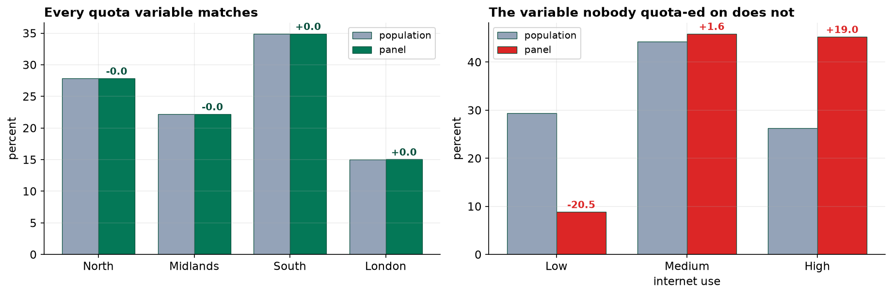
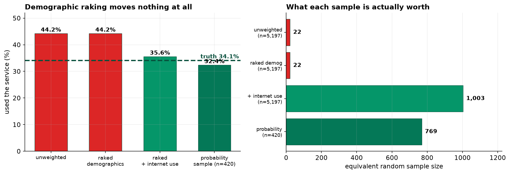

The Panel Says 44 Percent. The Real Figure Is 34.
It matches the census on every demographic we checked, and that is exactly why the problem was invisible.
Recommendation
Do not publish the panel's 44 percent. Our small probability sample puts uptake at 32 percent, and the panel is out by around ten points. After reweighting on internet use it comes to 36 percent, which is usable. Keep commissioning the small random sample: it costs a fraction of the panel and it is the only reason we caught this.
Why the usual checks did not catch it
The panel matches the population on age, sex and region almost exactly. It was recruited to. Quota sampling works by signing people up until those shares match, so passing that check tells us about the recruitment process and nothing about the answer.
Weighting to the census, which is the standard fix, therefore changed the figure by a thousandth of a percentage point. There was nothing left to correct. A report saying "weighted to census margins" would have been perfectly true and completely uninformative.

What was actually wrong
People who volunteer for an online panel are confident internet users. Our panel is 45 percent heavy users against a national 26 percent, and it contains barely a third of the light users it should. That matters enormously for this question, because heavy users are almost five times likelier to have used an online service (62 percent against 13 percent).
Because internet use cuts across age, sex and region rather than lining up with them, a panel can be perfectly balanced on all three and still be badly skewed on the thing that matters.
What the panel is worth

Priced by accuracy rather than headcount, the 5,197-person panel performed like a random sample of 22 people. Our 420-person probability sample performed like 769. Reweighting on internet use lifts the panel to about 1,003, which is a real gain and still means most of the fieldwork bought us very little.
What to do
- Add internet use, and anything else that predicts joining, to the panel questionnaire and to the weighting scheme. Demographics alone are not enough and never were.
- Keep the probability sample. It is small, it is expensive per interview, and it is the benchmark that made this measurable. Without it we would have published 44 percent in good faith.
- Publish the weight range. Ours runs from 0.25 to 8.3, so a few hundred respondents are standing in for a large share of the population. Readers should be told that.
- Stop quoting a margin of error on panel results without a caveat. The arithmetic gives about 1.4 points. The real error was ten.
What we cannot say
Reweighting fixed most of the problem because we happened to have asked about internet use and an official survey happened to publish the national figures. Neither was guaranteed. For any question where we do not hold the variable that drives panel membership, the same bias will be present, uncorrected and invisible. A bigger panel would not help: doubling it halves a statistical error that was never the problem.